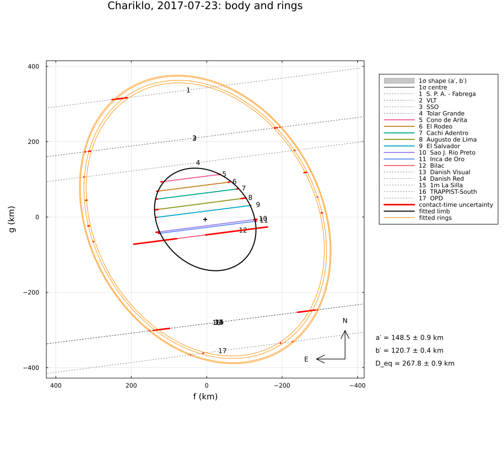
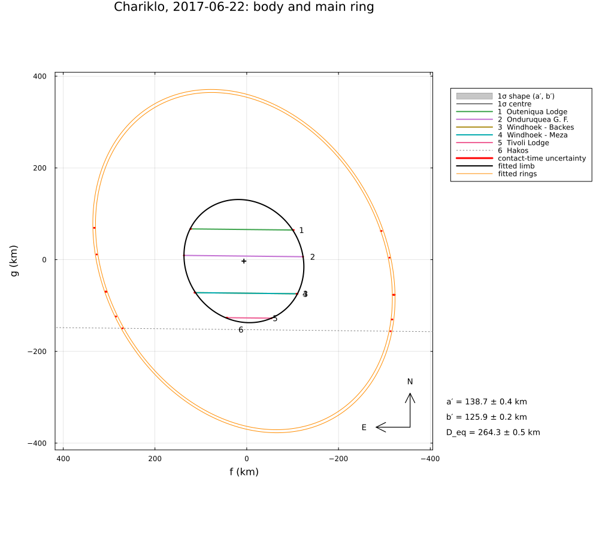

Chariklo and its rings, 2017–2020
Seven stellar occultations by the centaur (10199) Chariklo and its two narrow rings, reduced from the timings published by Morgado et al. (2021), A&A 652, A141 (Table C.1 at the CDS): the main body and the ring detections (C1R, the main ring, and C2R, the outer ring) from Namibia, South America, La Réunion and Australia.
The example covers:
- the ring system of 2017 July 23 (23 detections of C1R, 8 of C2R) and of 2017 June 22 with
RingedLimb, from the mid-times of the ring detections: radii, opening angle, position angle and pole, against the paper's Table 2; - the mirror ambiguity of a single event, and its resolution by fitting the five events with ring detections together;
- the astrometry of all seven events, against the paper's Table 5.
The data are transcribed in examples/data/chariklo_2017_2020.jl (stations, stars) and read from the CDS table in examples/data/chariklo_cds/, with the stored JPL Horizons ephemerides, so the script runs offline:
julia --project=. examples/chariklo_2017_2020.jl [output_dir] (default: examples/output/chariklo_2017_2020)The code is not run when the manual is built. The output after each section is that of the last run of examples/chariklo_2017_2020.jl, stored in examples/output/chariklo_2017_2020/output.txt.
using Occultations, Random, Printf, Statistics
using Plots
import CairoMakie # saves the GeoMakie maps (Makie figures)
include(joinpath(@__DIR__, "standard_figures.jl"))
include(joinpath(@__DIR__, "data", "chariklo_2017_2020.jl"))
out = length(ARGS) >= 1 ? ARGS[1] : mkpath(joinpath(@__DIR__, "output", "chariklo_2017_2020"))
rng = MersenneTwister(2017)
P = CHARIKLO_PAPER
dates = ["2017-04-09", "2017-06-22", "2017-07-23", "2017-08-24", "2019-08-02", "2019-08-08", "2020-06-19"]Events and geometry
evs = Dict(d => chariklo_event(d) for d in dates)
for d in dates
e = evs[d]
xs = [x for c in e.chords for x in c.contacts]
@printf("%s: %2d chords, %2d contacts of the body, %2d ring detections of C1R, %d of C2R; distance %.2f au, shadow velocity %.2f km/s\n",
d, length(e.chords), count(x -> x.body ∉ (:ring1, :ring2), xs), count(x -> x.body === :ring1, xs),
count(x -> x.body === :ring2, xs), e.ca.dist_km / 1.495978707e8, e.ca.vel)
end2017-04-09: 3 chords, 4 contacts of the body, 5 ring detections of C1R, 0 of C2R; distance 15.47 au, shadow velocity 4.78 km/s
2017-06-22: 6 chords, 10 contacts of the body, 12 ring detections of C1R, 0 of C2R; distance 14.66 au, shadow velocity 22.00 km/s
2017-07-23: 17 chords, 16 contacts of the body, 23 ring detections of C1R, 8 of C2R; distance 14.72 au, shadow velocity 21.01 km/s
2017-08-24: 1 chords, 2 contacts of the body, 2 ring detections of C1R, 0 of C2R; distance 15.06 au, shadow velocity 12.55 km/s
2019-08-02: 2 chords, 4 contacts of the body, 0 ring detections of C1R, 0 of C2R; distance 15.25 au, shadow velocity 21.37 km/s
2019-08-08: 5 chords, 10 contacts of the body, 0 ring detections of C1R, 0 of C2R; distance 15.30 au, shadow velocity 20.14 km/s
2020-06-19: 1 chords, 2 contacts of the body, 2 ring detections of C1R, 0 of C2R; distance 15.55 au, shadow velocity 19.09 km/s2017 July 23: body and rings
The ring detections are used by their mid-times (Contact(:mid, …)); they fix the radius and the projected ellipse of each ring, not its width and opacity, which are fixed at values close to the paper's (C1R: 7 km, τ = 0.4; C2R: 3 km, τ = 0.05). The body is an ellipse.
function ringinit(pole; rings=2)
d = Dict{Symbol,Float64}(:ring_pole_ra => pole[1], :ring_pole_dec => pole[2], :ring1_radius => 386.0,
:ring1_width => 7.0, :ring1_tau => 0.4)
rings == 2 && merge!(d, Dict(:ring2_radius => 400.0, :ring2_width => 3.0, :ring2_tau => 0.05))
return d
end
fix2 = [:ring1_width, :ring1_tau, :ring2_width, :ring2_tau]
fix1 = [:ring1_width, :ring1_tau]
function ringrow(label, r, p)
sc = sqrt(r.chi2 / r.dof)
@printf("%-12s χ²/dof = %.1f: C1R radius %.1f ± %.1f km (%.1f ± %.1f), B = %.2f ± %.2f° (%.2f ± %.2f), P = %.2f° (%.2f ± %.2f), pole (%.2f ± %.2f, %+.2f ± %.2f)° ((%.2f ± %.2f, %+.2f ± %.2f))\n",
label, r.chi2 / r.dof, r[:ring1_radius][1], sc * r[:ring1_radius][2], p.r..., r[:ring_opening][1],
sc * r[:ring_opening][2], p.B..., mod(r[:ring_pa][1] + 180, 360) - 180, p.P..., r[:ring_pole_ra][1],
sc * r[:ring_pole_ra][2], r[:ring_pole_dec][1], sc * r[:ring_pole_dec][2], p.pole[1]..., p.pole[2]...)
end
println("(paper values in parentheses; errors scaled by √(χ²/dof))")
e23 = evs["2017-07-23"]
r23 = fit_limb(e23; model=RingedLimb(EllipseLimb(); rings=2), fix=fix2, init=ringinit((151.0, 41.8)), starts=4, rng=rng)
ringrow("2017-07-23", r23, P.ring_fits["2017-07-23"])
@printf(" C2R radius %.1f ± %.1f km (%.1f ± %.1f), distance between the rings %.1f km (%.1f)\n",
r23[:ring2_radius][1], sqrt(r23.chi2 / r23.dof) * r23[:ring2_radius][2], P.C2R.radius...,
r23[:ring2_radius][1] - r23[:ring1_radius][1], P.gap)
@printf(" body: a′ = %.1f ± %.1f, b′ = %.1f ± %.1f km, PA = %.1f°, area-equivalent radius %.1f km\n",
r23[:equatorial_radius]..., r23[:semi_minor_axis]..., mod(r23[:position_angle][1], 180), r23[:equivalent_radius][1])The mid-times have errors of a few milliseconds (VLT, Danish, OPD), while the rings are neither perfectly circular nor of constant width (the paper: eccentricity 0.005–0.022 for C1R, width 4.8–9.1 km): χ²/dof is large, and the errors are scaled.
(paper values in parentheses; errors scaled by √(χ²/dof))
2017-07-23 χ²/dof = 28.4: C1R radius 385.2 ± 0.5 km (385.9 ± 0.4), B = 50.00 ± 0.13° (49.91 ± 0.11), P = -60.94° (-60.85 ± 0.11), pole (150.91 ± 0.17, +41.76 ± 0.09)° ((151.03 ± 0.14, +41.81 ± 0.07))
C2R radius 401.7 ± 0.6 km (399.8 ± 0.6), distance between the rings 16.5 km (13.9)
body: a′ = 148.5 ± 0.9, b′ = 120.7 ± 0.4 km, PA = 133.3°, area-equivalent radius 133.9 km2017 June 22: body and the main ring
e22 = evs["2017-06-22"]
r22 = fit_limb(e22; model=RingedLimb(EllipseLimb(); rings=1), fix=fix1, init=ringinit((151.0, 41.8); rings=1), starts=4, rng=rng)
ringrow("2017-06-22", r22, P.ring_fits["2017-06-22"])2017-06-22 χ²/dof = 3.3: C1R radius 390.7 ± 2.6 km (386.6 ± 12.3), B = 50.73 ± 0.39° (52.33 ± 1.97), P = -60.23° (-62.13 ± 3.46), pole (151.76 ± 0.53, +42.27 ± 0.48)° ((149.46 ± 2.60, +40.98 ± 2.12))The mirror ambiguity, and all ring events together
One event sees the projected ring ellipse; a ring plane and its mirror image (opening angle −B) give the same ellipse and the same χ². The pole is fixed in space, the viewing geometry changes between events: fitted together, the events select one plane. The body is a circle here (one radius for all events), the ring widths and opacities are fixed as above.
u23 = EventContext(e23).u
mirror = Occultations._ring_pole(-r23[:ring_opening][1], r23[:ring_pa][1], u23)
r23m = fit_limb(e23; model=RingedLimb(EllipseLimb(); rings=2), fix=fix2, init=ringinit(mirror), starts=4, rng=rng)
@printf("2017-07-23 alone: pole (%.2f, %+.2f)°, χ² = %.1f; mirror plane: pole (%.2f, %+.2f)°, χ² = %.1f\n",
r23[:ring_pole_ra][1], r23[:ring_pole_dec][1], r23.chi2, r23m[:ring_pole_ra][1], r23m[:ring_pole_dec][1], r23m.chi2)
rdates = ["2017-04-09", "2017-06-22", "2017-07-23", "2017-08-24", "2020-06-19"]
revs = [evs[d] for d in rdates]
joint(pole) = fit_limb(revs; model=RingedLimb(CircleLimb(); rings=2), fix=fix2,
init=merge(ringinit(pole), Dict(:radius => 125.0)), starts=4, rng=rng)
rj = joint((151.0, 41.8))
rjm = joint(mirror)
@printf("five events (%s): pole (%.2f, %+.2f)°, χ² = %.0f; started from the mirror pole: (%.2f, %+.2f)°, χ² = %.0f\n",
join(rdates, ", "), rj[:ring_pole_ra][1], rj[:ring_pole_dec][1], rj.chi2, rjm[:ring_pole_ra][1],
rjm[:ring_pole_dec][1], rjm.chi2)
sc = sqrt(rj.chi2 / rj.dof)
@printf("joint fit: C1R radius %.1f ± %.1f km (%.1f ± %.1f), C2R radius %.1f ± %.1f km (%.1f ± %.1f), pole (%.2f ± %.2f, %+.2f ± %.2f)° ((%.2f, %+.2f))\n",
rj[:ring1_radius][1], sc * rj[:ring1_radius][2], P.C1R.radius..., rj[:ring2_radius][1], sc * rj[:ring2_radius][2],
P.C2R.radius..., rj[:ring_pole_ra][1], sc * rj[:ring_pole_ra][2], rj[:ring_pole_dec][1], sc * rj[:ring_pole_dec][2],
P.C1R.pole[1][1], P.C1R.pole[2][1])The mirror plane is rejected by the joint fit by a large margin. The C1R radius and the pole agree with the paper's; the C2R radius is a few km larger than the paper's 399.8 km (the paper fits C2R with a separate pole; the distance between the rings, 14 km in the paper, is poorly determined from four pairs of detections).
2017-07-23 alone: pole (150.91, +41.76)°, χ² = 1078.7; mirror plane: pole (67.50, +7.65)°, χ² = 1078.7
five events (2017-04-09, 2017-06-22, 2017-07-23, 2017-08-24, 2020-06-19): pole (151.13, +41.94)°, χ² = 25888; started from the mirror pole: (73.95, +8.31)°, χ² = 185991
joint fit: C1R radius 386.9 ± 1.7 km (385.9 ± 0.4), C2R radius 403.4 ± 1.9 km (399.8 ± 0.6), pole (151.13 ± 0.51, +41.94 ± 0.27)° ((151.03, +41.81))Astrometry (the paper's Table 5, same star positions)
The body centre of each event: from the joint ring fit for the events with ring detections (the rings fix the centre even for a single chord), from an elliptical limb for 2019 August 8 (five chords) and from a circle of the joint radius for 2019 August 2 (two chords; of the two mirror solutions the one closer to the ephemeris is taken).
fits = Dict{String,Tuple{Any,Int}}(d => (rj, k) for (k, d) in enumerate(rdates))
fits["2019-08-08"] = (fit_limb(evs["2019-08-08"]; rng=rng), 1)
r02 = [fit_limb(evs["2019-08-02"]; model=CircleLimb(), fix=[:radius],
init=Dict(:radius => rj[:radius][1], :center_g => s * 150.0), rng=rng) for s in (-1, 1)]
fits["2019-08-02"] = (r02[argmin([hypot(r[:center_f][1], r[:center_g][1]) for r in r02])], 1)
for d in dates
r, k = fits[d]
t, ra_p, dec_p = P.positions[d]
ep = Epoch(t)
e = evs[d]
ra_, dec_, _ = ephem_radec(e.body, ep)
a = astrometry(r; event=k)
r_, d_ = Occultations.offset_radec(ra_, dec_, a.offset_ra, a.offset_dec)
@printf("%s %s UTC: RA %s Dec %s; minus Table 5: Δα cos δ = %+6.1f mas, Δδ = %+6.1f mas (σ %.1f, %.1f mas)\n", d,
t[12:16], format_ra(r_; digits=5), format_dec(d_; digits=4), (r_ - parse_ra(ra_p)) * cosd(d_) * 3.6e6,
(d_ - parse_dec(dec_p)) * 3.6e6, a.ra_err, a.dec_err)
end1 mas is 30 km at Chariklo's distance. The paper fits the body with its 3-D shape model, here a circle or an ellipse is used: differences of a few mas are expected.
2017-04-09 02:24 UTC: RA 19 04 03.62557 Dec -31 17 15.2575; minus Table 5: Δα cos δ = +0.1 mas, Δδ = +0.2 mas (σ 0.0, 0.0 mas)
2017-06-22 21:18 UTC: RA 18 55 15.66017 Dec -31 31 21.6225; minus Table 5: Δα cos δ = -0.4 mas, Δδ = -0.7 mas (σ 0.0, 0.0 mas)
2017-07-23 05:58 UTC: RA 18 48 09.22889 Dec -31 26 32.4379; minus Table 5: Δα cos δ = +0.0 mas, Δδ = -0.3 mas (σ 0.0, 0.0 mas)
2017-08-24 02:59 UTC: RA 18 42 35.23720 Dec -31 09 50.5609; minus Table 5: Δα cos δ = +0.2 mas, Δδ = +0.6 mas (σ 0.0, 0.1 mas)
2019-08-02 10:02 UTC: RA 19 33 07.48127 Dec -25 34 42.5194; minus Table 5: Δα cos δ = -0.1 mas, Δδ = -0.2 mas (σ 0.5, 0.8 mas)
2019-08-08 21:41 UTC: RA 19 31 49.79105 Dec -25 34 26.7821; minus Table 5: Δα cos δ = +0.4 mas, Δδ = +2.9 mas (σ 2.6, 17.5 mas)
2020-06-19 15:51 UTC: RA 20 02 32.00023 Dec -22 20 41.4887; minus Table 5: Δα cos δ = -0.1 mas, Δδ = -0.2 mas (σ 0.1, 0.1 mas)Figures
savefig(plot(r23; title="Chariklo, 2017-07-23: body and rings", size=(1000, 900)), joinpath(out, "chariklo_20170723.png"))
savefig(plot(r22; title="Chariklo, 2017-06-22: body and main ring", size=(1000, 900)), joinpath(out, "chariklo_20170622.png"))
# the standard figures of 2017 July 23 (body only): limb fits, maps and the globe
standard_figures("chariklo", fit_limb(chariklo_event("2017-07-23"; rings=false); rng=rng); out=out,
projection="+proj=laea +lon_0=-60 +lat_0=-25", limits=(-85, -35, -40, -10), window=900, marks=60)
println("figures written to ", out)The body and the two rings on 2017 July 23, and the body with the main ring on 2017 June 22:

